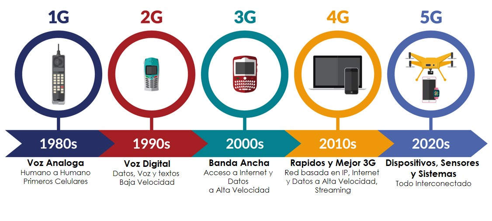

Red 5G
Autora: Perla Liliana Pérez Cruz

Definición:
5G es la quinta generación de tecnología celular. Está diseñada para aumentar la velocidad, reducir la latencia y mejorar la flexibilidad de los servicios inalámbricos. La tecnología 5G ofrece una velocidad máxima teórica de 20 Gbps, mientras que la velocidad máxima de la tecnología 4G es solo de 1 Gbps.
5G también ofrece menor latencia, lo que puede mejorar el rendimiento de las aplicaciones comerciales y de otras experiencias digitales (como juegos en línea, videoconferencias y automóviles con piloto automático).